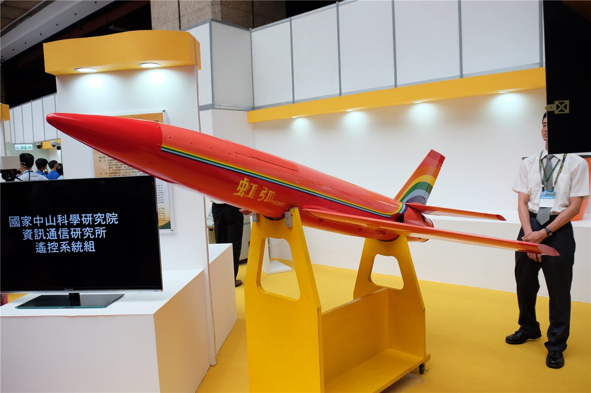

대만·미국, ‘비(非)홍색 공급망’ 무인기 협력 강화
라이칭더 대만 총통이 대만과 미국이 손잡고 중국을 배제한 무인기 공급망을 구축하겠다고 밝혔다.
정가호 기자 · 2026.08.25
橋대만

대만은 무인기(드론) 산업을 안보와 직결된 전략 산업으로 보고 있다. 부품과 소프트웨어에서 특정국 의존을 낮추고, 신뢰할 수 있는 공급망을 함께 만들겠다는 구상이다.
광고 문의 · 300×250미국 의회에서도 관련 법안 처리를 촉구하는 목소리가 나왔다. 무인기는 방위뿐 아니라 물류·농업 등 민간 분야로도 쓰임이 넓다.
華橋時報는 공급망 재편을 사실 중심으로 전하며, 산업·안보가 얽힌 사안인 만큼 각 당사국의 입장을 균형 있게 담는다.